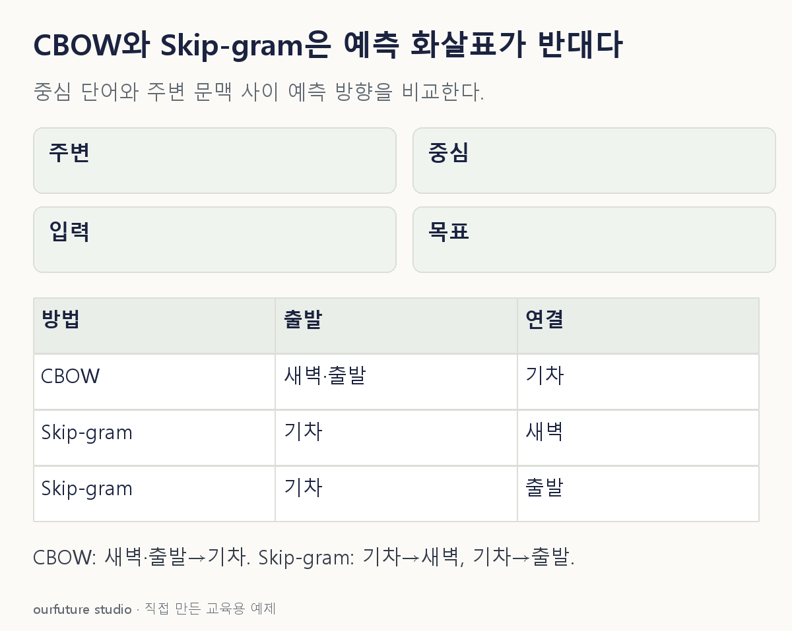

핵심 이론
word2vec의 CBOW는 주변 단어의 연속 표현을 결합해 중심 단어를 예측한다. Skip-gram은 중심 단어를 입력으로 주변 단어를 예측한다. 둘 다 단어 벡터를 학습하지만 어떤 단어를 입력과 목표로 만드는지가 다르다. CBOW라는 이름을 단순 단어 빈도 벡터인 전통적 bag-of-words와 같은 출력이라고 보지 않는다.
원 논문의 CBOW는 문맥의 단어 표현을 합치므로 그 문맥 안의 순서에 불변인 결합을 사용한다. Skip-gram은 한 중심 단어에서 여러 주변 단어 쌍을 만들 수 있다. 창 크기와 문장 경계, 동적 창 선택에 따라 실제 학습 쌍 수가 달라진다. 여기서는 경계를 넘어가지 않는 고정 반경 1을 명시해 예시를 단순화한다.
학습된 정적 단어 임베딩은 보통 같은 단어에 하나의 벡터를 부여한다. 문맥마다 표현을 바꾸는 현대 문맥 임베딩과 구별한다. 이름만으로 속도·정확도의 보편적 우열을 정하지 않는다. 아래는 실제 임베딩을 훈련한 실험이 아니라 짧은 토큰열에서 입력·정답 쌍을 구성하는 예제다.
작은 예제로 확인하기
토큰열 [새벽,기차,출발]에서 중심은 기차, 고정 반경은 1이다.
| 방식 | 입력 | 목표 |
|---|---|---|
| CBOW | 새벽·출발의 문맥 | 기차 |
| Skip-gram | 기차 | 새벽 / 출발 |
이 중심 위치에서 Skip-gram은 (기차→새벽), (기차→출발) 두 쌍을 만든다. CBOW는 두 문맥을 묶어 기차를 목표로 한다.
그림으로 확인하기

직접 고르기
[새벽,기차,출발]의 중심은 기차. 반경 1의 주변 단어로 중심을 예측한다.
해당 학습 방향은?
- 1. CBOW: 문맥→기차
- 2. Skip-gram: 문맥→기차
- 3. PCA: 문맥→기차
- 4. CCA: 문맥→기차
정답과 오답의 이유 확인하기
정답 1번 — CBOW: 문맥→기차
주변 문맥을 입력으로 중심 단어를 예측하는 방향은 CBOW다.
- 2번: Skip-gram은 중심에서 주변을 예측하는 반대 방향이다.
- 3번: PCA는 이러한 중심 단어 예측 과제를 정의하는 이름이 아니다.
- 4번: CCA는 두 변수 묶음의 선형결합 상관을 다루는 기법이다.
조건 하나 바꾸어 풀기
같은 중심 위치를 Skip-gram으로 바꾸면 입력과 목표 쌍은?
풀이: 입력 기차에서 목표 새벽, 입력 기차에서 목표 출발의 두 쌍.
반경 1이라 왼쪽과 오른쪽이 각각 목표다. 문장 경계나 무작위 창 조정은 이 자체 예제에서는 사용하지 않는다.
다시 떠올릴 단서
CBOW는 문맥에서 중심, Skip-gram은 반대.
근거와 적용 조건
- Mikolov et al., 2013 — 3.1 CBOW·3.2 Skip-gram 및 Figure 1의 예측 방향; 성능표 수치 미사용. 확인일 2026-10-30.
상황·수치·보기·조건 변경은 자체 교육 예제다. 민간 복원 문항의 공식 정답이나 실제 성능·학습 효과를 뜻하지 않는다.
읽은 내용을 적용해 보기
고정 반경1·한 문장·세 토큰이다. 임베딩 학습·동적창·빈도 하위표집·실제 성능 비교는 수행하지 않는다.